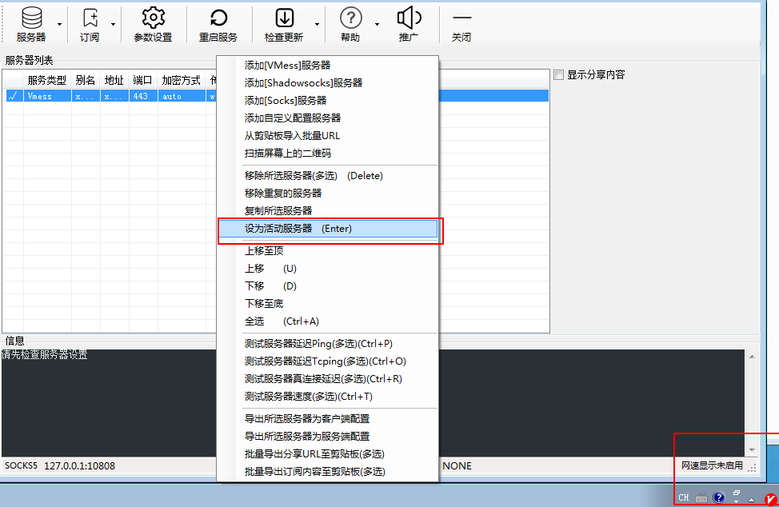

单独下载: v2rayN
单独下载: NDP471 , 也可以去百度搜索 net framework 4.71 下载,这里提供微软的下载地址: https://www.microsoft.com/en-us/download/details.aspx?id=56116
使用说明
1.压缩包解压后，可以看到如下两个文件

2. 先安装NDP471,
直接一路next即可（备注： 如果您的电脑已经有该软件了，则不需要安装）。
3. 再解压v2rayN，解压后进入该文件夹，如图步骤进行



4. 完成以上步骤即可上网
注意：
- 先测试能不能上网（google 或youtube）；
- 如果能则不需要进行一下步骤。
- 如果不能上网， 则进行更新软件。